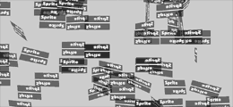
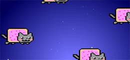
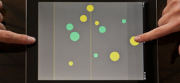

Sprite3D wraps HTML elements with the necessary behaviours to easily control their 3D-position using a simple Javascript syntax. To create a Sprite object, you can either supply an existing DOM object or let the library create an empty <div> (you can apply a CSS class to the DOM element after its creation).
As you manipulate "real" HTML elements, you don't need a <canvas> object (and its performance problems), nor a WebGL-enabled browser. And, as 3D transforms are hardware-accelerated, you can get a very decent framerate, even on (Apple's) mobile devices.
At this stage of development, 3D positionning is achieved via WebKit's CSS 3D transforms, restricting the library usage to Chrome and Safari browsers, as well as iOS's Mobile Safari. However, due to its wrapping, non-intrusive nature, it allows for building semantically valid HTML pages, adding the animation layer afterwards, achieving a valuable progressive enhancement effect.
Sprite3D.js has no dependencies, so it can easily be integrated with other JS libs.
It is provided under the MIT Licence.
- AS3-style properties :
x, y, z
rotationX, rotationY, rotationZ
scaleX, scaleY, scaleZ
width, height
alpha
- Lots of accessor methods :
setPosition(x,y,z) setX(x) setY(y) setZ(z)
move(x,y,z) moveX(x) moveY(y) moveZ(z)
setRotation(x,y,z) setRotationX(x) setRotationY(y) setRotationZ(z)
rotate(x,y,z) rotateX(x) rotateY(y) rotateZ(z)
setScale(x,y,z) setScaleX(x) setScaleY(y) setScaleZ(z)
- AS3-style scenography via the
addChild() and removeChild() method, children inheriting of their parent's transformations
- JS-style method chaining :
new Sprite3D()
.setPosition(x,y,z)
.setRotation(rx,ry,rz)
.setClassName('class')
.update();
- Basic support for sprite sheets. At this point, all the tiles must have the same size (for one Sprite).
/* CSS : */
.spriteClass {
background: url("img/sheet.png");
width: 32px;
height: 64px;
}
/* JS : */
// one-time set-up :
mySprite.setClassName("spriteClass").setTileSize( 32, 64 );
// then, later :
mySprite.setTilePosition( 0, 3 );
- Easily manipulate the underlying DOM elements with the
domElement and style properties. There's also a bunch of helper methods like setClassName, getClassName, addClassName, removeClassName, setId, getId, setCSS, getCSS and setInnerHTML that let you keep your CSS workflow
- Check for browser support using the
Sprite3D.isSupported() method
-
Hello World
Basic example, showing how to create a root container, add a single Sprite3D object, apply a CSS class and x-axis rotation.
-

Hello World 3D
A more advanced version of the first example. A simple 3D object is create using four faces, then animated using its container's 3D rotation methods.
-

Particles (kind of)
Two containers, some png's, some more pure CSS divs, and rotations all the way.
-

Tweening example
Showing how to tween positions and rotations using TweenJS.
-

Events example
This might be the base for a simple point-and-touch game for the iPad.
For the Nyan-haters out there, here's a JESUS version.
-

Round corners example
This example is inspired by this one from paperjs. It offers a good comparison between canvas- and DOM-based animation framerates.
-
Flower
A bit of recursive hierarchy, CSS classes and a simple rotation. That's all it takes to build a flower. The flower parameters are slightly randomized.
-
Hover-Flower
Same as above, but it mutates randomly when hovered or touched.
-
3D image gallery
A classic use of 3D positionning for a spatial image gallery.
-

Skybox demo
Use a panoramic image to build a skybox cube.
-
Canvas demo
Combine the ease of 3D positionning with Sprite3D.js and the pleasure of generating graphics using HTML's canvas for even more fun !
-

Sprite Harrier
Porting your favorites old school games to HTML 5 is just a no-brainer with Sprite3D.js (just kidding). Chrome has some rendering problems with this one, but [Mobile] Safari doesn't care.
-
Sliding puzzle
Quick prototype for a classic game.
-

OLO Game
London-based studio Sennep created a full featured iOS game with HTML5 technologies and Sprite3D. The result is a free touch game that you can install on your device and that's just what Sprite3D was created for.